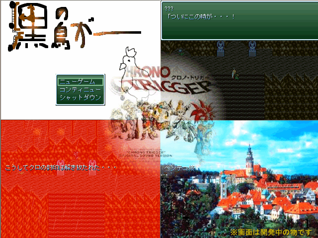

| No,015 【黒の鳥がー】 |
| ダウンロード（1.54MB） |
 |
| 【ＨＮ】 やよがし 【コメント】 ついに登場正統派ＲＰＧ！！！ なんとあの戦闘までも完全再現！？？オリジナルストーリーでお届けする感動の 超大 作！ 【あらすじ】 ある日、肝試しとして訪れた遺跡で伝説の神の違宝を見つけてしまう。 そのことでブレーカー組織に命を狙われる主人公。 そこへ突如として現れた謎の少女・・・。今、運命の歯車が動き出す。 ※あらすじとゲーム内容は一切関係ありません。 |
| 【管理人コメント】 これは・・・！？ |